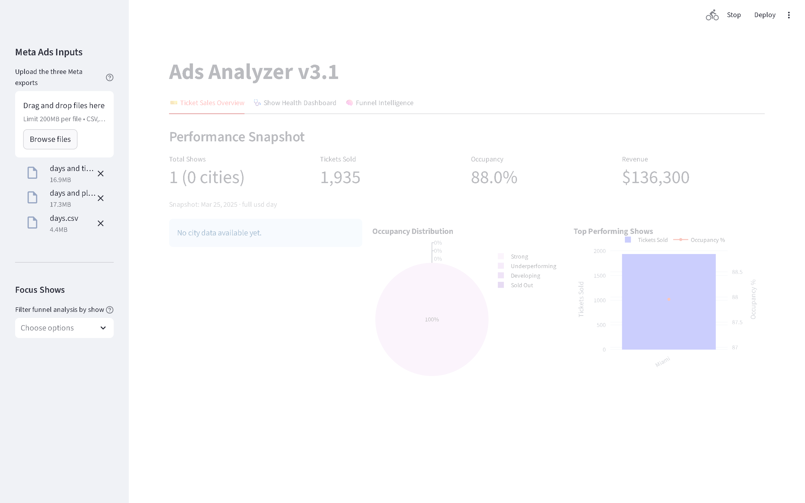
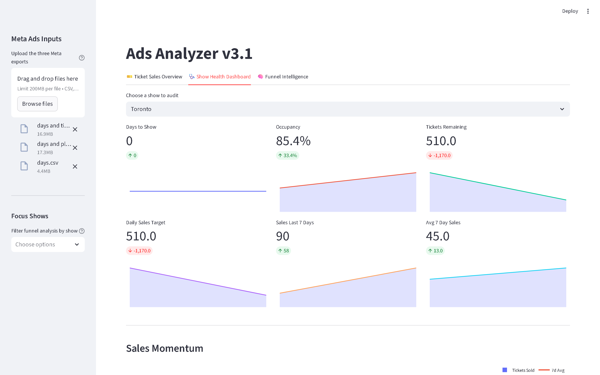
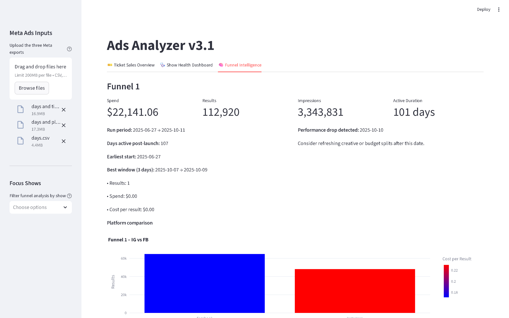

Streamlit dashboard that merges Meta Ads exports with live ticket sales from a public Google Sheet and normalizes revenue across currencies in real time.
An events company was running Meta Ads campaigns across many shows and venues but struggled to connect ad spend to actual ticket revenue, especially when tickets were priced in different currencies. The dashboard ingests the three standard Meta exports (Days, Days + Placement + Device, Days + Time) and pairs them with live ticket sales pulled from a public Google Sheet.
A regex-based rules file maps every ad row to its show and funnel stage. Non-USD revenue is converted with live exchange rates (open.er-api.com, with offline fallback), and ticket KPIs reflect the latest snapshot per show, so capacity, tickets sold, revenue, and occupancy always stay current.
For the first time the team could see, per show, how Meta spend translated into tickets sold and USD revenue, with funnel decay and pacing alerts surfaced directly in the dashboard.
Running locally with the three Meta exports uploaded and a representative ticket-sales snapshot in place of the revoked live Google Sheet.



First iteration focused only on Meta Ads. A single Streamlit page ingested up to three CSV types and used a regex rules file to classify every ad by show and funnel stage. Designed for quick deployment on Streamlit Community Cloud.
Integrated live ticket sales from a public Google Sheet, added currency-aware revenue handling with live FX, and reworked ticket metrics to be snapshot-aware so every KPI reflects the latest report per show.
Refactored the data mapper, centralized environment-aware caching and logging in deployment_config.py, and produced deployment checklists for Ubuntu VPS with systemd and for Fly.io, ready for a small-footprint production run.